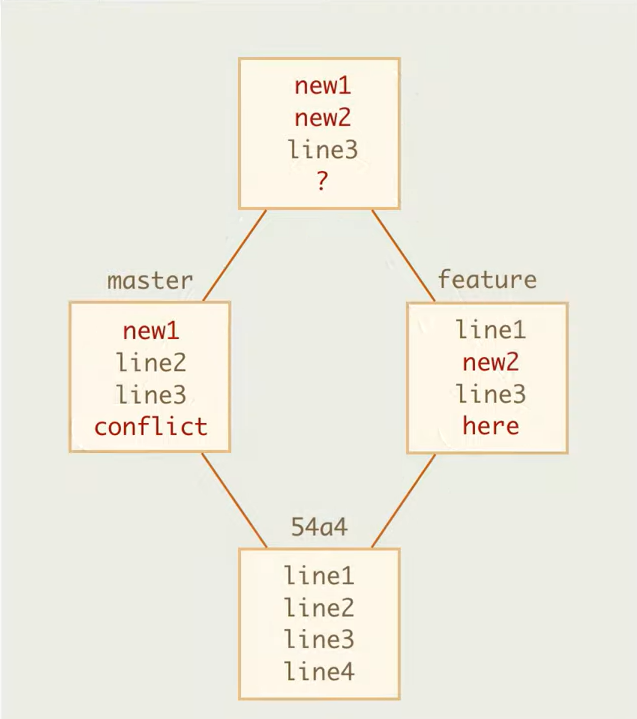
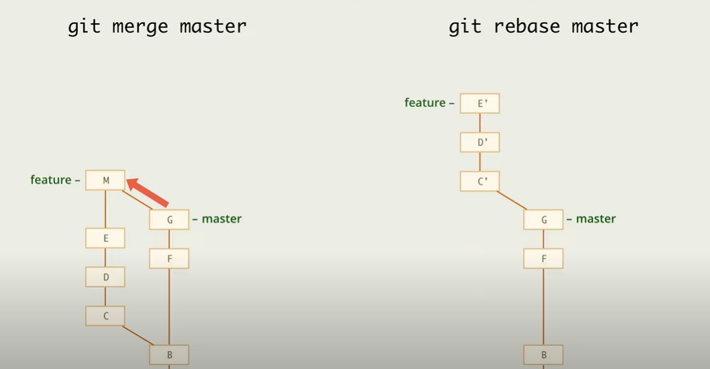

GIT commands
commit message types
First commit on a new branch
git checkout -b 'branchName'
git add .
git commit -m 'commit message'
change previous commit
git push
git push --set-upstream origin 'branchName'
Change previous commit
git checkout 'branchName'
git add .
git commit --amend
change previous commit
git push -f
Squash any commits in one
git rebase -i HEAD~num
num - is any commits number you want to rebase in one commit
in console -> press i -> first commit 'pick', next onse 'squash' -> ESC :wq
in console -> press i -> delete first commits messages -> ESC :wq
git push
Rebase branch on master without conflicts
git checkout master
git pull
git checkout 'branchName'
git rebase master
Rebase branch on master with conflicts
git checkout master
git pull
git checkout 'branchName'
it's better to squash all commits on this branch before rebase
git rebase master
Reslove conflicts
git add .
git rebase --continue
git push -f
Stash
git stash
Stash all changes. Do it on branch, f.e. 'branchName'.
git stash pop
Apply all stashed changes. Do it on branch 'branchName'.
Branch
git checkout -b 'branchName'
Create new branch and checkout on it
git checkout 'branchName or commitHash'
Checkout on branch or hash, f.e. 'git checkout '01fer3'
git branch
Show all local branches
git branch -d 'branchName'
Soft delete local branch
git push origin --delete 'branchName'
Delete remote branch
git branch -m 'oldBranchName' 'newBranchName'
Rename old branch
Logs
git status
Show files status of repository
git log --oneline
Show all commits
git reflog
Show all refs (checkout, rebase, merge, pull ...) actions
git log master..branchName --oneline
Show all commits of only branchName
Reset changes
git checkout -f HEAD
Remove all uncommited changes on branch, delete all changes
git reset HEAD~num
Decline num of commits,move to previous commit , BUT with not indexed changes
of the current commit
git commit --amend
change previous commit
git checkout 'branchName or commitHash' fileName
Change file (fileName) on current branch, according to branch or hash, f.e. git
checkout master index.js
Coppy commits
git cherry-pick 'branchName or commitHash'
On another branch, create new commit, copy commit changes into current branch
git cherry-pick 'master..branchName'
On another branch, create any new commit, copy ANY commits changes into current
branch
git cherry-pick --abort
Cancel cherry-pick
Merge
git merge 'branchName'
On another branch, f.e. master. Create new commit on master -> all changes of
master + all changes of branchName
Merge 2 branches into new one commit on master branch (HEAD)
Git check changes of base-feature and base-master commits, if there is no
conflicts in files -> add . If there are conflicts -> need resolve conflicts

Merge 2 branches with conflicts on line4, but no conflicts on line 1-2
git merge --abort
Cancel merge (before branches were successfuly merged). Everything will be as
before
git add .
git commit -m 'message'
After successful merging with resolving conflicts
git reset --hard HEAD~1
If we want to cancel successful merge
Rebase
git rebase master
Rebase current 'branchName' on master

git rebase --abort
Cancel rebase, before commiting
git rebase --continue
Continue rebase one commit if there is no conflicts
git rebase --onto master feature
Rebase 2 commits from unwnted branch feature

git rebase -i HEAD~num
num - is any commits number you want to rebase in one commit
git rebase --edit-todo
Edit interactive rebase config
Merge vs Rebase

Remote repo
git clone 'httpsRepoUrl or sshRepoUrl'
Copy remote repo into current directory
origin
In Git, "origin" is a shorthand name for the remote repository that a project
was originally cloned from. More precisely, it is used instead of that original repository's URL -
and thereby makes referencing much easier. (f.e. 'https://github.com/RomaZherko21/git-commands.git'
may be 'origin')
origin/master
Is a master branch in remote git repo. (f.e.
'https://github.com/RomaZherko21/git-commands.git/master')
git remote add origin 'remoteRepoUrl'
Sync your local repo and remote repo, according to remoteRepoUrl (f.e.
'https://github.com/RomaZherko21/git-commands.git/master'), and name remoteRepoUrl as origin.
git push
Upload local repository content to a remote repository
git pull
git pull = git fetch + git merge. Command is used to fetch and download content
from a remote repository and immediately update the local repository to match that content
git remote -v
Shows remote repos
git fetch
Command used to download contents from a remote repository. But without
merging.
git fetch origin 'remoteBranch':'localBranch'
git checkout 'localBranch'
Checkout on new remote branch which you dont have on local repo (f.e. git fetch
origin Fix-4:Fix-4)
git pull origin 'remoteBranch'
Pull latest changes from remoteBranch